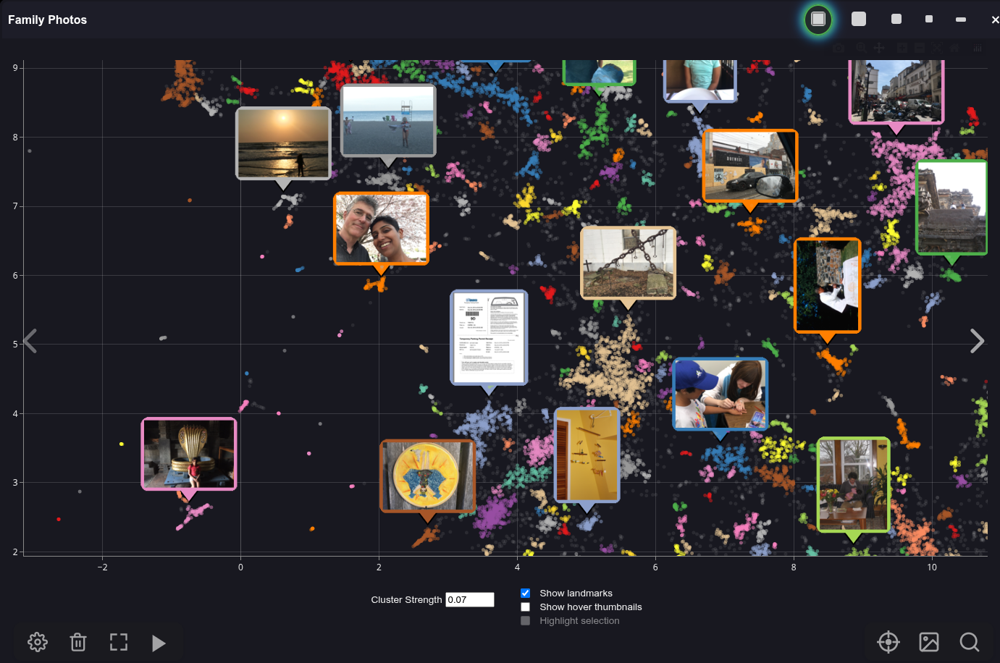
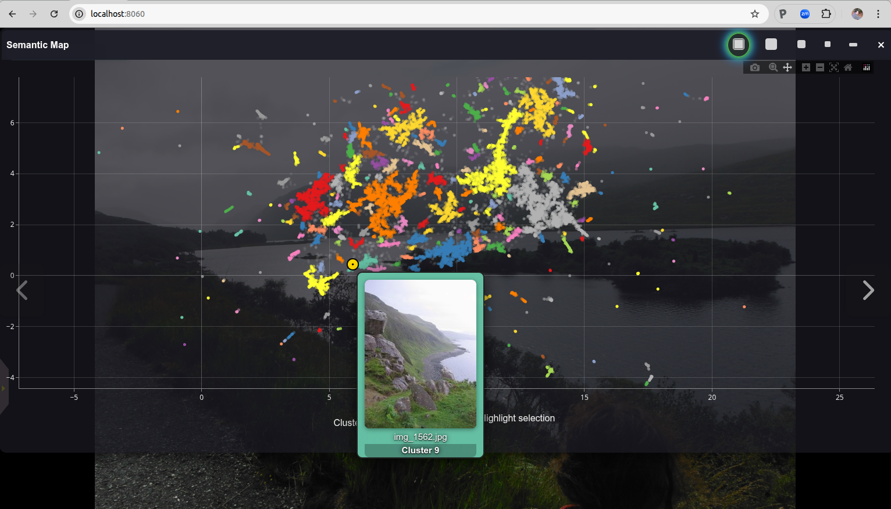
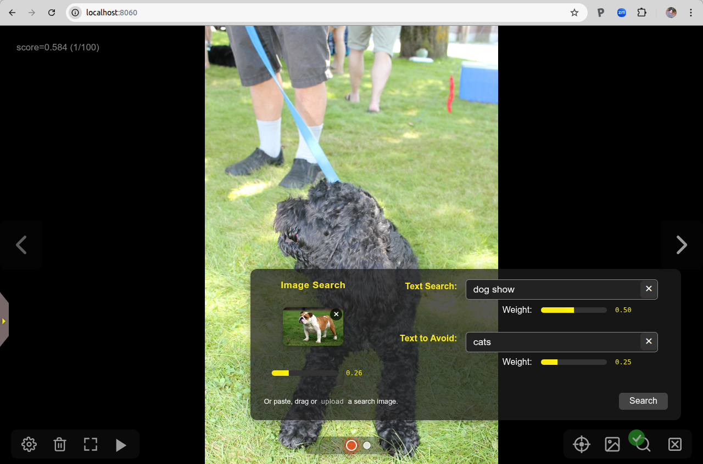
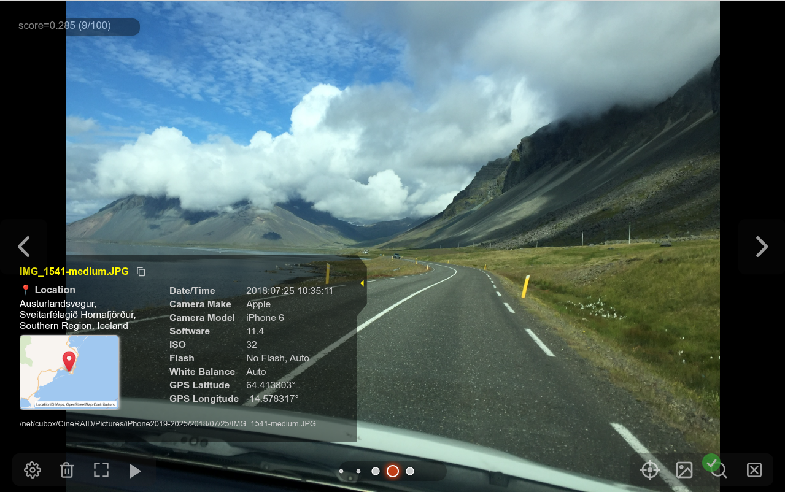
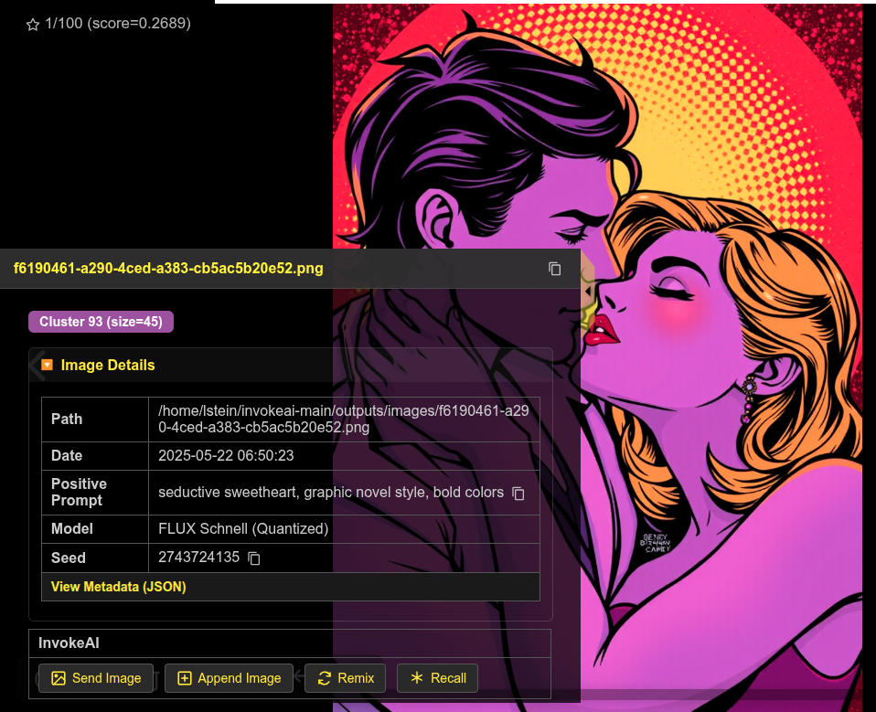
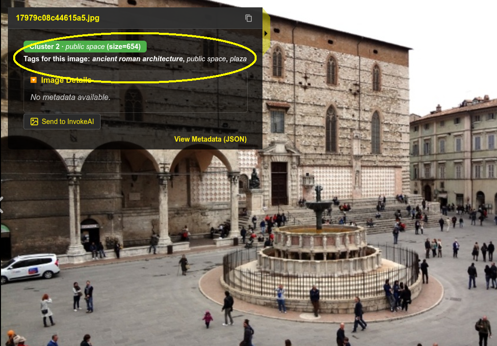

PhotoMapAI
Rediscover your photo collection!
PhotoMapAI is a fast, modern image browser and search tool for large photo collections. It uses the CLIP computer vision model to enable text and image-based search, image clustering, and interactive slideshows with a responsive web interface. Its unique feature is a "semantic map" that clusters and visualizes your images by their content. Browse the semantic map to find and explore thematically-related groups of photos, or use text and/or image similarity search to find specific people, places, events, styles and themes.

Features
- Fast browsing of large image collections and image metadata
- AI-based text and image similarity search
- Thematic image clustering and visualization
- Flexible album management
- Integration with the InvokeAI image generation app.
- A curator mode for creating training sets for LoRA models.
- Extensible backend (FastAPI)
- Responsive UI for desktop and mobile
- Support for wide range of image formats, including Apple's HEIC
- All images are local to your computer; nothing goes out to the internet
Quick Links:
The Semantic Map
PhotoMapAI's unique feature is its ability to identify thematically similar images and automatically cluster them, creating a "semantic map":

In this map, each image in the photo collection is represented as a dot. The colors distinguish different clusters of related images. You can zoom in and out of the map and pan around it. Hover the mouse over a dot in order to see a preview thumbnail of its image, or click on a cluster to view its contents at full resolution.
You can move the semantic map around, shrink it down in size, or hide it altogether. As you browse your photo collection, a yellow dot marker will highlight the location of the current image in the map.
Text and Image Similarity Search
PhotoMapAI lets you search your collection by similarity to another image, by text, or by a combination of image and text as shown below:

You can start an image similarity search by uploading a local image file, dragging an image from a web browser window or file browser, or by selecting an existing image from your collection. There's also a "Text to Avoid" field, which can be used to disfavor certain image content.
Photo Metadata Display
When viewing a photo in full-screen mode, you can pop out a little drawer to show its metadata, including the GPS location (if available), and the camera/phone settings:

InvokeAI Image Generation Support
If you are a user of the InvokeAI text-to-image generation tool, you can get quick access to the key settings used to generate the image, including the prompts, model and LoRAs in use, and the input images used for IPAdapters, ControlNets and the img2img raster layer. You can view the full metadata in its native JSON format, and copy and paste it.

Any image can be sent to a running InvokeAI instance to use as a reference image for image-to-image and style transfer. If the image was originally generated with InvokeAI, you can remix it (same parameters, different starting seed) or recall it (regenerate the exact image). Instructions for configuring the PhotoMapAI to InvokeAI link can be found here.
Autotagging
You can optionally activate autotagging, which will use a vision model to assign tags to individual images as well as to each cluster in the semantic map. You can easily add your own tags to customize the labels.

Other Features
PhotoMapAI supports most of the other features you would expect, including support for multiple separate photo albums, the ability to browse photos chronologically, an uncluttered fullscreen mode, and of course a configurable slideshow mode that can show images sequentially or shuffled.
Quick Start
The easiest way to install PhotoMapAI is the native installer for your platform. You don't need Python, CUDA, or anything else first — the installer sets everything up on first launch. Download the file for your system from the latest Releases page (under Assets), where X.X.X is the current version:
| Platform | Download | Install |
|---|---|---|
| macOS | PhotoMapAI-X.X.X.dmg |
Open the .dmg, drag PhotoMapAI to Applications |
| Windows | PhotoMapAI-X.X.X-setup.exe |
Run the installer (no admin rights needed) |
| Linux | PhotoMapAI-X.X.X-x86_64.AppImage |
chmod +x it and double-click, or run from a terminal |
The first launch downloads a private copy of Python and the AI libraries (a multi-gigabyte, one-time download that takes a few minutes; a console window shows progress). When it finishes, the server starts and your browser opens automatically to create your first album. Later launches start in seconds. An NVIDIA GPU is detected and used automatically, as is Apple Silicon acceleration.
See the Installation guide for PyPI, Docker, source, GPU overrides, and uninstall details.
Install from the command line
If you already have Python 3.10–3.14:
uv tool install photomapai --torch-backend auto # or: pip install photomapai
start_photomap
After the startup messages your browser opens to http://localhost:8050 automatically.